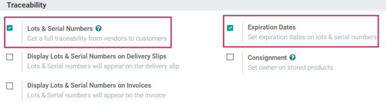
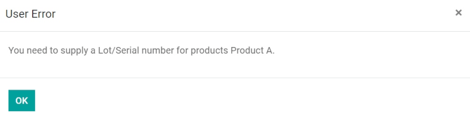
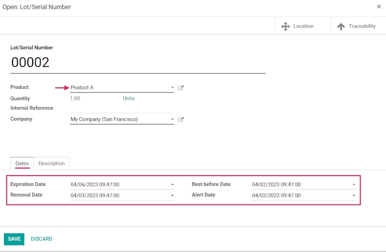

Fechas de vencimiento¶
En Odoo, puede usar las fechas de vencimiento para gestionar y dar seguimiento a los ciclos de vida de los productos perecederos en todas sus etapas. El uso de estas fechas reduce las pérdidas de productos debido a vencimientos inesperados y ayuda a evitar que envíe productos caducados a los clientes.
En Odoo solo le puede agregar información de caducidad a productos que usen lotes o números de serie. Una vez que asignó un lote o número de serie, podrá configurar una fecha de caducidad. Esto es muy util para empresas que siempre, o casi siempre, venden productos perecederos, como empresas de preparación de alimentos.
Activar las fechas de caducidad¶
Para activar el uso de fechas de caducidad, vaya a , y navegue a la sección Trazabilidad. Después haga clic en la caja para activar la función de Lotes y números de serie.
Una vez que active la función, aparecerá una nueva opción para activar las fechas de caducidad. Marque la casilla para activar la función y asegúrese de Guardar los cambios.
Truco
Ya que haya activado la función Lotes y números de serie aparecerán más funciones para Mostrar números de lote y de serie en recibos de entrega, Mostrar números de lote y de serie en las facturas y para Mostrar fecha de caducidad en las notas de remisión. Activar estas funcionles le ayudará a tener trazabilidad completa, lo que facilitará la gestión de productos que se hayan retirado, a identificar «malos» lotes de productos y mucho más.
Configure fechas de caducidad en productos¶
Una vez que haya activado las funciones de Fechas de caducidad y Lotes y números de serie en los ajustes de la aplicación Inventario, podrá configurar a información de caducidad en productos individuales.
Para hacerlo, vaya a y seleccione un producto para editarlo. Al seleccionar un producto se mostrará el formulario de ese artículo en específico. Ya que esté en el formulario del producto, haga clic en Editar en la esquina superior izquierda para realizar cambios.
Importante
Para que los productos se puedan rastrear con lotes o números de serie, o para configurar la información de caducidad, el Tipo de producto que aparezca en la pestaña de Información general debe ser Producto almacenable.
Después, haga clic en la pestaña Inventario y baje a la sección titulada Trazabilidad. Desde ahí asegúrese de que la casilla de Por número de serie único o Por lotes esté marcada.
Una vez que esté, aparecerá una nueva casilla de Fecha de caducidad que también debe estar marcada. Cuando ambas casillas estén marcadas, aparecerá un nuevo campo llamado Fechas a la derecha.
Nota
Si un producto tiene existencias a la mano antes de activar el seguimiento por lote o número de serie, es posible que necesite realizar un ajuste de inventario para poder asignar lotes a las existencias que ya tiene.
Truco
Para procesar grandes cantidades de productos que se recibieron o se entregaron, le recomendamos rastrear los productos con lotes, para que varios productos se puedan rastrear con el mismo lote si ocurren problemas.

En el campo de fechas hay cuatro categorías de información de caducidad que debe configurar para el producto:
Fecha de caducidad: el número de días después de haber recibido los productos (ya sea de un proveedor o después de producirlos) en los que el producto ya no debería usarse o consumirse por seguridad.
Consumir preferentemente antes de: el número de días antes de la fecha de caducidad en la que los productos se empezarán a deteriorar sin que sean peligrosos todavía.
Tiempo de remoción: el número de días antes de la fecha de caducidad en los que el producto se debe quitar de existencias.
Periodo de alerta: el número de días antes de la fecha de caducidad en los que se debería enviar una alerta sobre los bienes en un lote que tengan un número de serie en especial.
Nota
Con los valores que ingrese en estos campos se calculará la fecha de caducidad para bienes que ingrese a sus existencias, no importa si los compró a un proveedor o si usted los fabricó.
Ya que configuró toda la información de fecha de caducidad, haga clic en Guardar para guardar todos los cambios.
Truco
Si no ingresó ninguna información de caducidad al campo Fechas, puede asignar fechas (o lotes) de manera manual al recibir y entregar productos dentro y fuera del almacén. Incluso cuando ya están asignadas las fechas, las puede cambiar usted mismo si lo necesita.
Configure fechas de caducidad al momento de recibir el producto con lotes y números de serie.¶
Puede generar fechas de caducidad para bienes entrantes directamente desde la orden de compra. Para crear una orden de compra, vaya a y haga clic en Crear para crear una nueva solicitud de cotización.
Después, agregue un Proveedor y después haga clic en Añadir un producto para agregar Productos a las líneas de productos.
Para elegir la cantidad que desea ordenar cambie el número de la columna Cantidad. Haga clic en Confirmar orden. De esta manera convertirá la Solicitud de cotización en una orden de compra.
Haga clic en el botón inteligente Recepción en la parte superior de la orden de compra para llegar al formulario de recepción del almacén.
Nota
Si hace clic en Validar antes de asignar un número de serie a las cantidades del producto ordenado, aparecerá una ventana emergente de Error del usuario, que le pedirá que ingrese un número de serie o lote para los productos ordenados. No se puede validar la Solicitud de cotización si no ha asignado un lote o un número de serie.
Desde aquí puede hacer clic en el icono de menú de Opciones adicionales que se encuentra hasta la derecha de la línea del producto. Al hacer clic en este icono, aparecerá una ventana emergente de Operaciones detalladas.
En esta ventana emergente haga clic en Agregar una línea y asigne un lote o número de serie en el campo Lote/número de serie
De manera automática se llena una fecha de caducidad según la configuración en el formulario del producto (si se configuró antes).
Truco
Si no ha configurado el campo Fechas en el formulario del producto, puede ingresar esta fecha de manera manual.
Después de que se estableció la fecha de caducidad, marque Hecho en las cantidades y haga clic en Confirmar para cerrar las ventanas emergentes. Después, haga clic en Validar.

Cuando valide que recibió un producto, aparecerá un botón de Trazabilidad. Si hace clic en este botón podrá ver un Reporte de trazabilidad actualizado en el que se incluye un documento de referencia, el producto que está rastreando, el Lote o número de serie y más.
Configurar fechas de caducidad en productos fabricados¶
También puede generar fechas de caducidad para productos que usted fabrique. Para asignar fechas de caducidad a estos productos, debe completar una orden de fabricación.
Para crear una Orden de fabricación vaya a y haga clic en Crear. Abra el menú extendible del campo Producto y elija el producto que quiere crear, después elija la guilabel:Cantidad que quiere producir.

Nota
Para fabricar un producto, debe haber materiales por consumir en las líneas de la columna Producto. Para hacer esto debe crear una Lista de materiales para el Producto o debe agregar materiales por consumir de manera manual, solo tiene que hacer clic en Agregar una línea.
Ya que esté listo, haga clic en Confirmar.
Para asignar un número de lote, seleccione un número de lote existente desde el menú desplegable junto a Lote/Número de serie o haga clic en el + verde.
Después, seleccione un número de unidades para el campo Cantidad y después haga clic en Marcar como hecho.
Haga clic en el icono Enlace externo en el campo de Lote/Número de serie asignado. Aparecerá una ventana emergente donde se mostrará todos los detalles de ese número específico.
En esa ventana emergente, vaya a la pestaña Fechas y podrá ver toda la información sobre fecha de caducidad que había configurado antes en el producto. Esta información también está disponible en el formulario de detalles de ese producto en específico, para verlo vaya a .
Vender productos con fechas de caducidad¶
Los productos perecederos que tienen fecha de caducidad se venden de la misma manera que cualquier otro tipo de producto. El primer paso es vender el producto perecedero para crear una orden de venta.
Para hacer esto, vaya a , cree una nueva cotización y llene la información en la orden de venta.
Agregue un Cliente, haga clic en Agregar un producto para agregar los productos deseados a las líneas de Producto y configure una Cantidad para los productos.
Después haga clic en la pestaña Other Info tab. En la sección Entrega cambie la Fecha de entrega a una fecha después de la fecha esperada y haga clic en la palomita verde para confirmar la fecha. Finalmente, haga clic en Confirmar para confirmar la orden de venta.
Después, haga clic en el botón inteligente de Entrega que se encuentra en la parte superior de la orden de ventas para poder ver el formulario de entrega del almacén.
En el formulario de recepción del almacén, haga clic en Validar, y después en Aplicar en la ventana emergente que saldrá. Así podrá procesar todas las cantidades Hechas de manera automática y podrá entregarle los productos al cliente.
Si los productos se entregan antes de que configure la Fecha de alerta en el formulario del producto, no se crearán advertencias.
Importante
Para vender productos perecederos con fechas de caducidad, la estrategia de remoción para la ubicación en la que se almacenan los productos debe configurarse como FEFO. Si en un lote no hay suficientes existencias de un producto perecedero, Odoo tomará de manera automática la cantidad que todavía se necesita directamente del siguiente lote que tenga la fecha de caducidad más cercana. Puede gestionar las estrategias de remoción en las Categorías de productos.
Ver también
Ver las fechas de caducidad para lotes y números de sere.¶
Para ver (o agrupar) todos los productos con fecha de caducidad por lote, vaya a .
Quite todos los filtros de búsqueda automáticos de la barra Buscar…. Después, haga clic en Agrupar por, elija Agregar grupo personalizado y seleccione el parámetro Fecha de caducidad desde el menú desplegable. Para aplicar el filtro haga clic en Aplicar
Si sigue estos pasos obtendrá un desglose de todos los productos perecederos, como sus fechas de caducidad y el número de lote que se les asignó.

Alertas de caducidad¶
Para ver alertas de caducidad vaya a .
Después, haga clic en el Lote/Número de serie que tenga productos perecederos para mostrar el formulario que contiene el número de serie. En el formulario de número de serie, haga clic en la pestaña Fechas para ver toda la información de caducidad que se relaciona a los productos.
Para editar el formulario haga clic en Editar en la esquina superior izquierda del formulario, después cambie la Fecha de caducidad a la fecha de hoy (o antes) y haga clic en Guardar para guardar los cambios.
Después de guarder, el formulario de número de lote mostrará una alerta de caducidad en rojo en la parte superior del formulario para indicar que los productos de este lote ya caducaron o caducarán pronto. Desde aquí, regrese a la página de Lote/Número de serie (a través de las migajas de pan).
Para ver la alerta de caducidad nueva, o cualquier alerta de caducidad para productos que ya caducaron (o caducarán pronto), quite todos los filtros de búsqueda de la barra Buscar… en el tablero de Lote/Número de serie.
Después, haga clic en Filtros y elija alerta de caducidad.